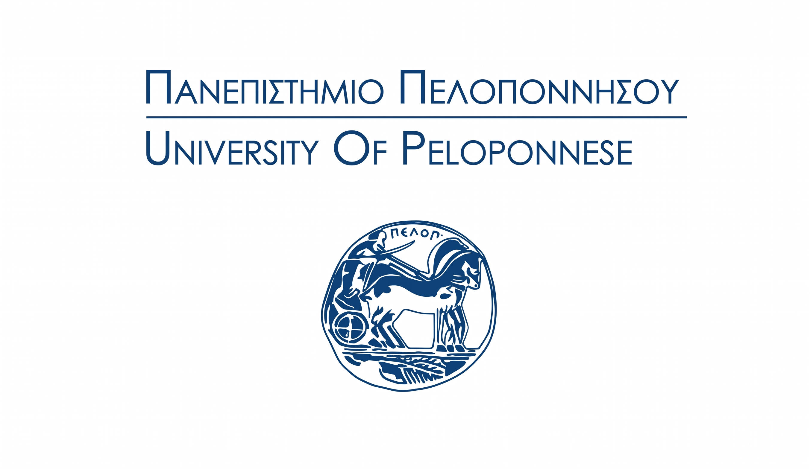

Μνημόνιο Συνεργασίας με το Πανεπιστήμιο Πελοποννήσου

Υπογράφεται Μνημόνιο Συνεργασίας μεταξύ της ΑΜΚΕ Κήπος της Λυσούς και του Τμήματος Διοίκησης Επιχειρήσεων και Οργανισμών του Πανεπιστημίου Πελοποννήσου — μια πενταετής δέσμευση για ψηφιακή ενδυνάμωση, εφαρμοσμένη έρευνα και συμπερίληψη ατόμων με αναπηρία.
Με αμοιβαίο όφελος και κοινό ενδιαφέρον, οι δύο φορείς ενώνουν τις δυνάμεις τους για την προώθηση της ισότιμης συμμετοχής, της προσβασιμότητας στη γνώση και της εφαρμοσμένης έρευνας στον χώρο της κοινωνικής φροντίδας.
Σκοπός της Συνεργασίας
- Ενίσχυση ψηφιακών δεξιοτήτων των ωφελούμενων μέσω εξειδικευμένων εκπαιδευτικών προγραμμάτων
- Υλοποίηση εφαρμοσμένης έρευνας στον τομέα της κοινωνικής φροντίδας και της ψηφιακής συμπερίληψης
- Από κοινού διοργάνωση σεμιναρίων, εργαστηρίων και εκπαιδευτικών προγραμμάτων
- Ευαισθητοποίηση φοιτητών σε ζητήματα αναπηρίας, ψυχικής υγείας και κοινωνικής φροντίδας
- Ανάπτυξη επιστημονικών εργαλείων για την ψηφιακή ενδυνάμωση των ωφελούμενων
Τομείς Συνεργασίας
Το Μνημόνιο διάρκειας πέντε ετών καλύπτει ένα ευρύ φάσμα θεματικών πεδίων:
- Ανάπτυξη καινοτόμων υπηρεσιών κοινωνικής φροντίδας και συμπερίληψης
- Ψηφιακές δεξιότητες ωφελούμενων και τεχνολογίες προσβασιμότητας
- Σχεδιασμός και αξιολόγηση θεραπευτικών και εκπαιδευτικών παρεμβάσεων
- Κοινωνική επιχειρηματικότητα και βιώσιμα μοντέλα λειτουργίας ΜΚΟ
- Ψηφιακός μετασχηματισμός υπηρεσιών φροντίδας και εφαρμογή νέων τεχνολογιών
- Ηθική τεχνητής νοημοσύνης και εφαρμογές ΤΝ στην υποστήριξη ωφελούμενων
Για τον συντονισμό των δράσεων προβλέπεται η δημιουργία μικτής Ομάδας Εργασίας, η οποία θα αναλαμβάνει την υλοποίηση κοινών εκπαιδευτικών και ερευνητικών πρωτοβουλιών, την υποβολή προτάσεων χρηματοδότησης και την αξιολόγηση των ωφελούμενων μέσω σύγχρονων επιστημονικών εργαλείων.
Η συνεργασία αυτή αποτελεί ορόσημο για τον Κήπο της Λυσούς — επιβεβαιώνει τη δέσμευσή μας για επιστημονική τεκμηρίωση, καινοτομία και ουσιαστική κοινωνική προσφορά.